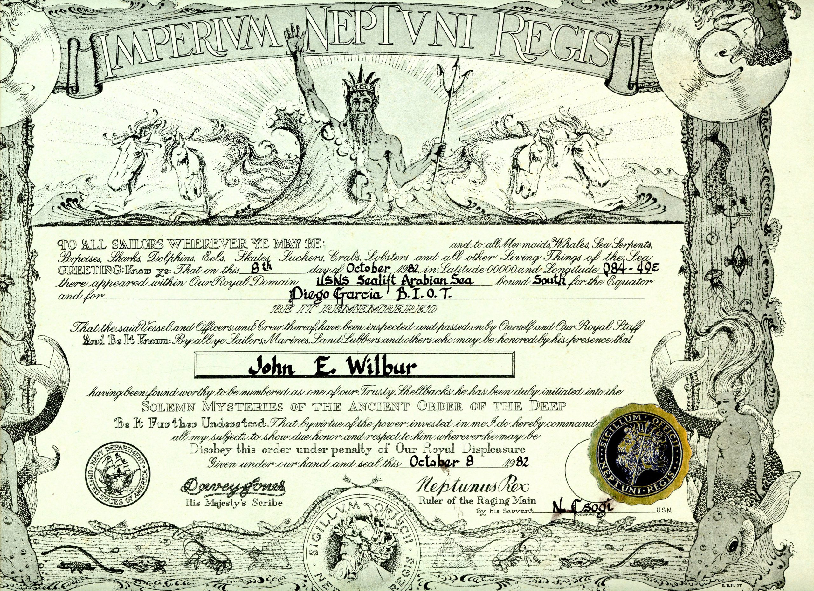
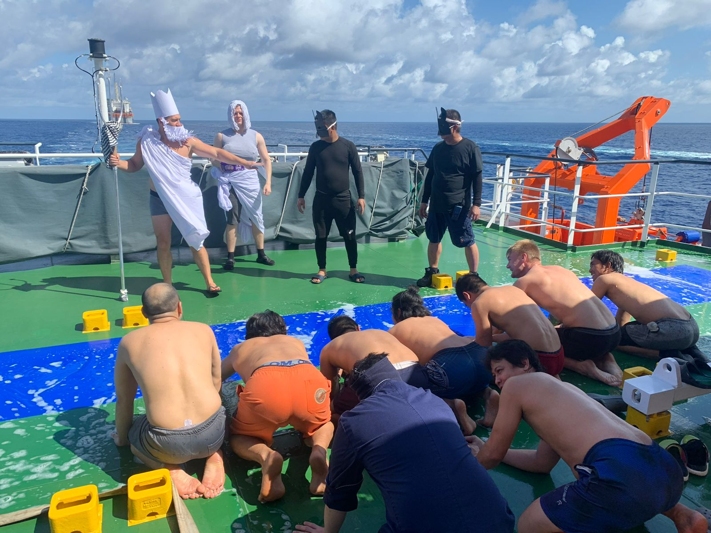
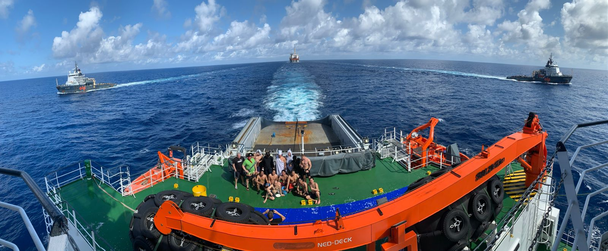
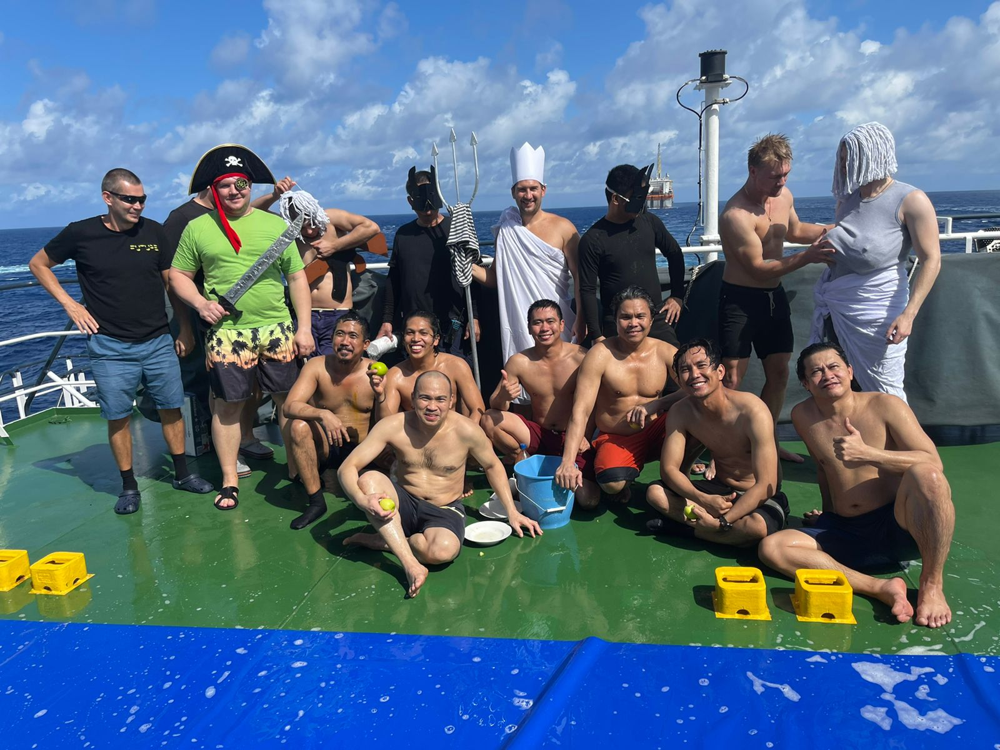
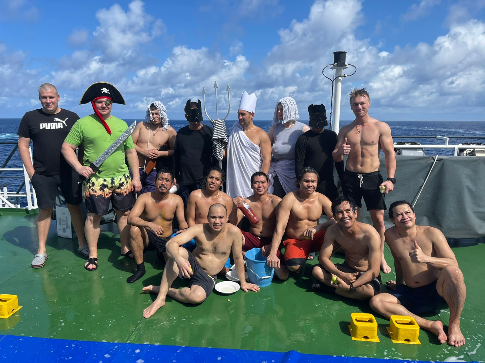

Впервые пересикающие экватор приклоняют колени перед морским правителем
Для моряка первое пересечение экватора является очень даже знаменательным событием, в этот день на судне организовывается «Праздник Нептуна»
Пра́здник Непту́на, Церемо́ния пересече́ния ли́нии, иногда — День Непту́на — водное представление, которое берёт основы от традиции моряков при пересечении экватора .
Согласно установившимся традициям, всем, впервые пересекающим линию экватора по морю, необходимо пройти обряд посвящения. Чаще всего он происходит по следующему сценарию: Новичок предстаёт перед Нептуном и его свитой, о нём докладывают, бреют, лечат и дают ему новое имя (псевдоним). Затем, о указу Нептуна, новичок, погоняемый чертями, проползает сквозь длинный мешок без дна (как через трубу), где измазывается сажей и мазутом. После этого черти ставят печать на самом видном месте новичка и бросают его в бассейн, где он купается. Далее новичок получает какой-либо «документ» о прохождении экватора, где значится его новое «имя» (осмысленный псевдоним, который могут поменять при следующих прохождениях экватора). Если член экипажа судна пересекает экватор не впервые, то он освобождается от посвящения при предъявлении «документа». К примеру, таким документом является вполне официальный «диплом Нептуна», отпечатанный типографским способом. На нём ставят печать «канцелярии Нептуна», автограф капитана судна, фамилия и имя посвящаемого и его новое «имя» (псевдоним). По традиции, Нептуна и свиту на празднике играют члены экипажа, уже пересекавшие ранее экватор. Капитан судна остаётся капитаном, и, согласно программе, должен докладывать Нептуну.
В свиту Нептуна обычно входят:
- черти;
- русалка;
- брадобрей;
- врач;
- звездочёт и другие.

Вот таким сертификатом владею я
Праздник Нептуна у моряков отмечается при пересечении судном экватора. Это часто объясняется тем, что во времена хождения парусных судов корабли долго ожидали попутного ветра, так как в экваториальной зоне часто был штиль. И якобы, чтобы найти развлечение для экипажа, придумали праздник Нептуна. Моряки мира называют этот праздник «Церемония пересечения линии».
Лично я пересекал экватор единожды, в октябре-ноябре прошлого года, к востоку от Бразилии. Как раз во время одного из самых больших и интересных проектов в котором мне приходилось принимать участие. Кроме меня как оказалось было не мало тех кто тоже впервые пересекал «Линию».

В нашем случае роль Нептуна играл Старший помощник, русалкой был Третий помощник, пиратом Третий Механик, а чертями матрос и Боцман.




Я тот парень с прессом что жует яблоко и трогает русалку за грудь